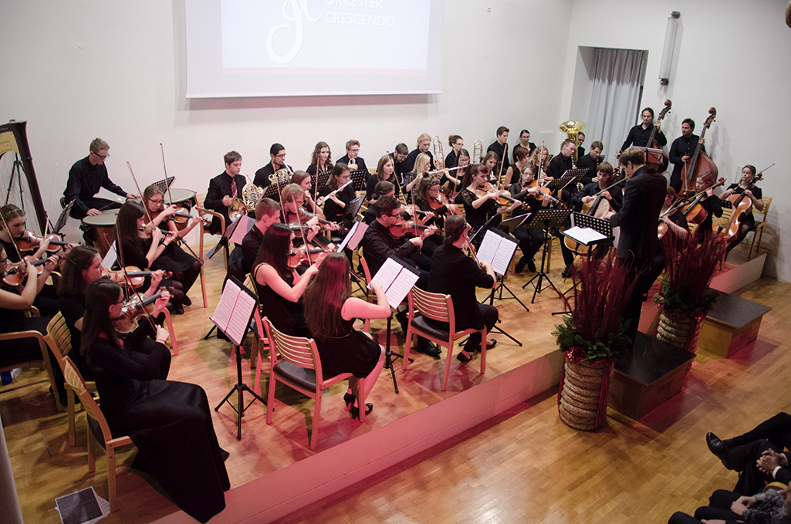

Na kratko o nastanku orkestra
Simfonični orkester Crescendo je s svojim delovanjem pričel oktobra leta 2012 in nastal iz želje po ustvarjanju glasbe za širše občinstvo na pobudo Žige Kerta. Pri tem mu je bila v veliko pomoč in oporo profesorica na Gimnaziji Škofja Loka, Ana Prevc Megušar, saj je Simfonični orkester Crescendo začel delovati prav pod okriljem Gimnazije Škofja Loka, kjer so jim omogočili tudi prostor za vaje. Približno štiridesetčlanski orkester se je pod dirigentsko palico Žige Kerta prvič predstavil na božičnem koncertu leta 2012, na katerem so izvajali božične skladbe, maja naslednje leto pa so se na spomladanskem koncertu predstavili s filmsko glasbo. Veliko priredb in avtorskih skladb, ki so jih izvajali, je prav zanje napisal skladatelj Gašper Jereb. Simfonični orkester Crescendo tako nadaljuje z vsakoletnim božičnim in spomladanskim koncertom, svoje delovanje pa je nadgradil še v januarju leta 2014, ko je bilo ustanovljeno Glasbeno društvo Crescendo.